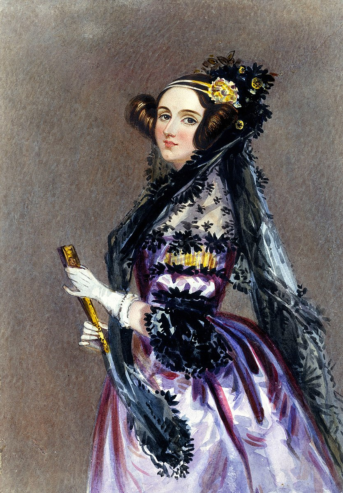

Ada Lovelace
Invented the first computer software

- Mother encouraged her to learn mathematics and logic in order to prevent the inheriting of her father's insanity
- At 12 years old, developed shockingly scientific schematics for flying wings
- Managed to continue developing her skills while on a year's bed rest from a measles infection
- Thrived in the social scene of Victorian Era England
- Mathematical skills led to a long working relationship with Charles Babbage, working on the first computers
- Published the methods for the first computer programs
- Highly respected by contemporary scientists like Babbage, Turing, Faraday